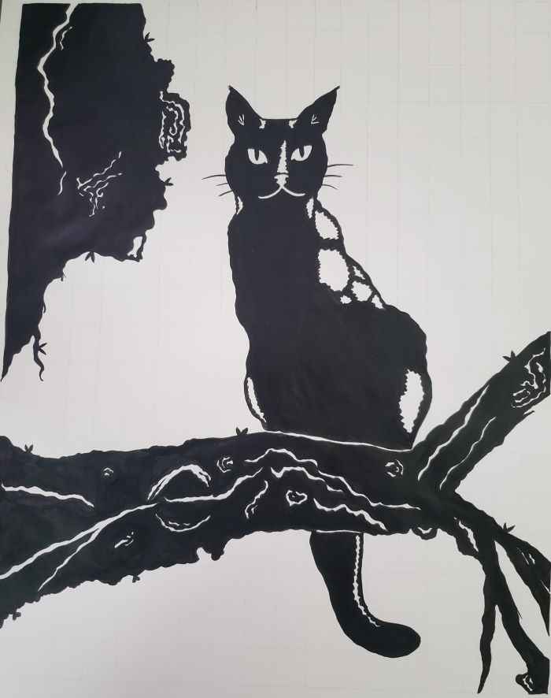
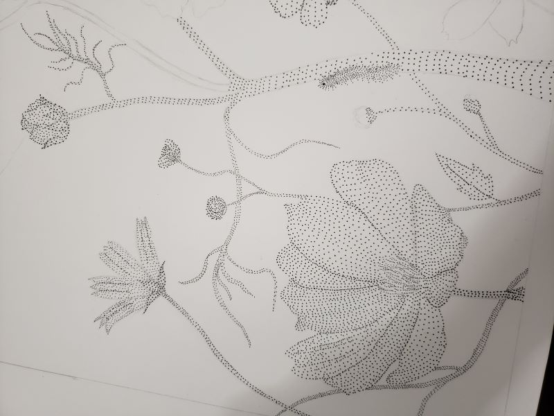
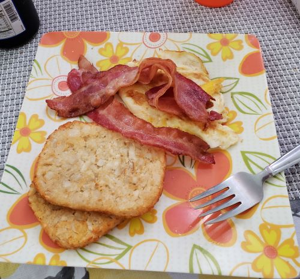
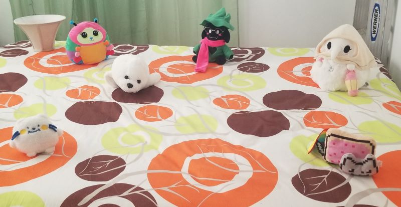
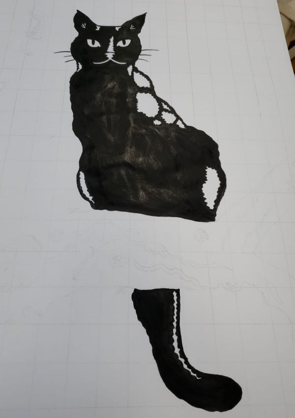

custom domain25.mar.24
have you noticed something... different? i got my very own custom domain now!  now you can access the site from doqmeat.com !!!
now you can access the site from doqmeat.com !!!
i've kept this a secret for a while but i've been researching for the past 3 months on how i would go into buying a custom domain for this site and how all that jazz works. i think i got an interest for a custom domain around december of last year. not sure how it started, but i kept thinking about it in the coming months. like hell, i even dreamt my site got a domain that was like doqmeat.yas which i find SO hilarious btw. why did i dream that...
you might be asking why would i want a custom domain and well... i just think it looks cool as Fuck! and not only that, but i have shared links to my site to close family and friends. and having shorter links does help a bit.
i thought VERY HARD about what TLD (.com, .net, .org, .world, etc.) i would want doqmeat would have. at the end of the day, i simply went with the iconic .com 
past log, i mentioned that i didn't have anything big for my site's soon to be 1 year anniversary... but that was a lie sorry! i wanted the custom domain to be implemented on april 11th for the anniversary, but after i bought it, i really couldn't wait any longer! i will still write a little something for that day.
with all that said, this also means that i am also a neocities supporter  meaning that my site space has increased from 1gb to 50gb ?!?!? that is so HUGE i don't think i will ever reach that... there are a lot of pictures on my site's server but i always make sure i compress them enough so i'm not sacrificing so much space. i also like that i can make other sites and easily switch between them! i have something in mind but i'm so busy that i'm just gonna leave that for summer or next year.
meaning that my site space has increased from 1gb to 50gb ?!?!? that is so HUGE i don't think i will ever reach that... there are a lot of pictures on my site's server but i always make sure i compress them enough so i'm not sacrificing so much space. i also like that i can make other sites and easily switch between them! i have something in mind but i'm so busy that i'm just gonna leave that for summer or next year.
i am currently in the middle of contacting webrings so the webring code appears on my site as it used to  but for internet neighbors reading this, there's no need to change my link since my .neocities.org will just redirect to here!
but for internet neighbors reading this, there's no need to change my link since my .neocities.org will just redirect to here!
a bit tired, happy i'm almost on spring break though
i recently ate some choco chip cookies i baked.... they were so good.... i might make more once i'm done here
warmth23.mar.24
hallo! (｡･∀･)ﾉﾞ this month went by so fast? though i feel like that is the case for... literally every month ever since i started studying.
i finished the painting of mizu that i was doing for art class!

 art class has been something that i've been enjoying a lot. it's a bit annoying to wake up at 6am for it tho BUT i do think it's very nice  we started working on another piece. for this one we are using micron pens (or anything similar to that) to make a picture. and we can ONLY do dots on the paper no lines or anything like that. only dots.
we started working on another piece. for this one we are using micron pens (or anything similar to that) to make a picture. and we can ONLY do dots on the paper no lines or anything like that. only dots.
this one has been also super fun to do. i added a little caterpillar to my drawing and i think it's my favorite thing from this piece so far.
i've also made a friend that i talk to all the time in class so that is very nice as well! i think of myself as friendly but in reality i kinda...... don't have that many friends, or just people i talk to frequently or hangout with. so being able to connect with people in my class makes my chest warm. even if its just for that class... i appreciate having the company nonetheless. a week ago i went to get ice cream with a classmate from precal that i get along with!  yay
yay
i've been really enjoying living on my own for the first time. i've met a lot of people that think differently from this but for me it is very nice. i just find it very peaceful :) been also in the groove of making myself some very yummy dishes. it's been a while since i've gotten in the flow of cooking for myself again. it's probably one of the best ways of showing myself some love. at least in my opinion...... but maybe i am just a foodie.
most days i only have time to heat up a toast or hashbrown and carry on with my day. but sometimes i make myself these complete breakfasts and they are SO GOOD...... i love breakfast 

i've been eating A LOT of salad as well. it can get boring at times but i try to mix it up a bit sometimes. most of the time i eat my salad with a piece of chicken breast or porkshop but this time i got some nan and nuggets yes i am about to be 24 years old YES i will still buy the dino nuggets and oh my god..... this was so good for no reason ?!?!?!?

and today i made (i forgor to take pics sorry it was really good) pasta with chicken and salsa alfredo (╹ڡ╹ ) cut some sweet bread to make garlic toast. and then as a treat i ate some ben n jerry's ice cream.... the world is beautiful.
i mentioned in my log dedicated to my beloved grandma that she would organize my plushies in the guest bedroom... well i found a pic of that as i was cleaning up my phone and i wanted to share it with all of you! so charming.

i have more plushies than this and i wanna showcase them all in a future website page! they are my babies.
i went to an orchestra for the very first time a few days ago! it was hosted right on my campus and it was FREE! yay we love free stuff. i've always wanted to go to one but never had the opportunity to go to one!
you might not get this vibe from me but I LOVE ORCHESTRAS... i am specially a big fan of the violins, cellos, and double basses. some of my favorite concerts are the undertale 5th anniversary concert (oh toby fox the genius composer that you are) and the elgar cello concerto
when i was little i was OBSSESED with violins so i guess that kinda carried to this day with my love for these concerts. i just find them extremely beautiful. at the orchestra i couldn't help but smile the entire time! though i also got a bit sleepy bc that type of music relaxes me... and i was also a bit tired.
all in all, i had an awesome time! i hope to go to more orchestras in the future. i think my dream would be to be able to go to a spiderverse concert i think i would cry from happiness if they happen to have tour dates in puerto rico.... miles morales is (half) puertorican to begin with SO maybe i have hope? PLEASE COME TO PUERTO RICO..........
 because of uni and how chaotic my life has been in general i have been barely playing video games for the past 3 months. recently i've been able to catch a little bit of a break so i've been playing paranormasight! it's a horror visual novel published by square enix that was recommended to me by a friend. i got it from the steam spring sale and i've been having a lot of fun with it. i'm still pretty early in the game, but i can't wait to see how the story unfolds!
because of uni and how chaotic my life has been in general i have been barely playing video games for the past 3 months. recently i've been able to catch a little bit of a break so i've been playing paranormasight! it's a horror visual novel published by square enix that was recommended to me by a friend. i got it from the steam spring sale and i've been having a lot of fun with it. i'm still pretty early in the game, but i can't wait to see how the story unfolds!
i've also been getting messages from friends about the different fashion dreamer events that have been happening and while i'm happy that game is getting more (needed) content, i'm also quite sad that i haven't been able to participate in them because of my busy schedule  i hope they repeat them at a different time. because another thing holding me back is the fact that i don't have wifi at my place
i hope they repeat them at a different time. because another thing holding me back is the fact that i don't have wifi at my place
as march closes, that also means that the 1 year anniversary of my personal site is getting near! 
i honestly find it insane how much my site has grown i had so much free time and all the things i have been able to do here. all the things i've done because of my site! i never thought i would get so many lovely comments and i really want to thank all of you who have contributed to that! i don't like paying attention to numbers but i couldn't help but noticed that my neocities profile also reached 400 followers. i've always had the rule that my website is made for my own enjoyment (first), but i am also glad other people enjoy this space that i've made for myself as well!
i can't promise anything big for the anniversary, but i might write more about my thoughts on building and having a personal website 
way too hot. it should not be this hot at 1am
dungeon meshi ep.5
uni + JS learning07.mar.24
wanted to show something i'm working on for art class!

we are working with contrast right now so i decided to do a drawing of my cat, mizu  we are painting it with chinese ink! i'm no where near done LOL but i really enjoy what i've been doing so far in the class! it's like a nice little breather from the other ones, despite being so early in the morning...
we are painting it with chinese ink! i'm no where near done LOL but i really enjoy what i've been doing so far in the class! it's like a nice little breather from the other ones, despite being so early in the morning... 
i've only started uni (again) just 2 months ago and i've been able to adjust pretty well in contrary to what i was thinking. though i do have to admit that uni is way. WAY easier when you can just focus on this and that's it. i don't how i would handle having a job and going to uni at the same time (AGAIN) but that's a problem for future me. either way it would be very funny if i got hired for some random retail job after applying a hundred times for the past 2 years. lol.
my very first exam was a precalculus one and i got a 96% on that! yay! though to be fair, i had to STUDY for that shit especially because we can't use calculators (LET ME KNOW IF YOU GUYS TOOK PRECALCULUS WITH A CALCULATOR OR NOT PLS??) AND I WILL BE REAL: i barely remember the multiplication tables or how to fucking divide decimals and dumb small things like that because i've gotten so used to calculators  but i knew this beforehand (thank god) and spent almost an entire day practicing how to do all of that stuff by hand. it also doesn't help that i am just Slow when it comes to basic math skills.... AND YET i still made it
but i knew this beforehand (thank god) and spent almost an entire day practicing how to do all of that stuff by hand. it also doesn't help that i am just Slow when it comes to basic math skills.... AND YET i still made it  good for me! good for me.
good for me! good for me.
another class i've been enjoying a lot are my social sciences class (ciencias sociales in spanish, i will refer to this class as CISO in the future). i've been learning a ton in that of stuff that i just ??? had no clue about. DOES ANYONE know that the US tested oral contraceptives on poor and uneducated women in puerto rico around the 40s? before it was approved by the FDA? not me!! and i'm not being like whattttt? the united states using a colony for their own gain and abusing of the people in said colony? no wayyyyyyyy broooo but like? just crazy they don't bother to teach us this in schools. or at least TO ME THEY DIDN'T! which is such a shame... and i'm not talking about this topic specifically. there are just SO MANY bits and pieces of puerto rican history that i am Just starting to find out recently. i hope that can change that in the future, because i think those things are worth teaching in schools. and not like my school where a nun was telling the whole class that if you're gay you're going to hell. but that is genuinely ANOTHER few paragraphs for ANOTHER time.
phew. anyway, what was i saying..... uni... i spend most of my free time in between classes in the library. using their wifi. i'm either studying for other classes here or working on my site and there is no in between :)
as i have previously asked in my neocities profile, i've also been reading on and practicing javascript whenever i have some free time! i am currently reading an e-book (recommended by jeith!) that comes along with links to exercises for practice and i've been getting the hang of it so far! i mean, i am in the first few chapters after all  but at least i am starting somewhere! i'm actually keeping track of the stuff i've learned on my github pages! i thought it would be nice to do so, this way some of this New Stuff can stay in my head while i get used to it. other neighbors also game me other recommendations so i've linked them all on my links page for future reference.
but at least i am starting somewhere! i'm actually keeping track of the stuff i've learned on my github pages! i thought it would be nice to do so, this way some of this New Stuff can stay in my head while i get used to it. other neighbors also game me other recommendations so i've linked them all on my links page for future reference.
siinamota's birthday AND MIKU DAY ON THE 9TH BTW! exciting, we love you siinamota and miku. life is beautiful
NOTHING IM HUNGRY....